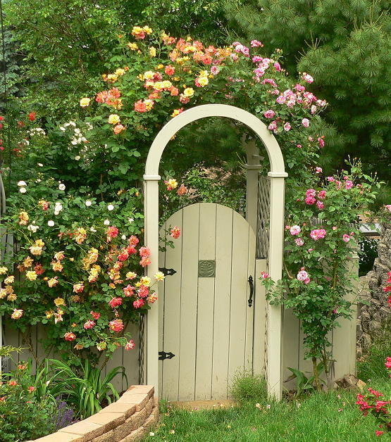

Hello! and welcome to the Kaye is Learning SQL Website!

Below are the contents of this text.
KayeILSQL-01-Database Concepts: A Relational Approach
KayeILSQL-02-Data Modeling and Normalization
KayeILSQL-04-Oracle Integrity Constraints
KayeILSQL-06-Multi-Table Joins
KayeILSQL-07-Aggregate Functions
KayeILSQL-08-Subqueries
I would like to have the Introduction Section here, down below.
You can also find it within the Contents.
My Dear Kaye is Learning SQL
I am here and now, starting to write this new piece of work called "Kaye is Learning
SQL".
The date today is the 16th of July 2021.
Dicle Ertan Ülger
dicle.ulger@gmail.com
Some Quotes of Encouragement for My Dear Kaye
The contents of this work are based on;
All that work and effort, and experience gave me the courage and the will to gather them together under one single roof.
Meaning of the "name Kaye" — from many sources in Google, though not limited with what is below:
Kaye for me, symbolizes;
All the girls, females, mothers, mothers of girls and boys, female partner and/or a wife,
sister of girls and boys, daughter of a mother and a father,
Who has a profession,
Who can make an earnest living,
Who can provide for and support their family members young and old,
Who feel joy and great happiness to be able to do these,
And ... who can have their own freedom, who can pursue their own goals and dreams at the same time,
Who feel happy, light-hearted and triumphant
to be free and to have achieved their own goals and
their own dreams.
Of course, Kaye can have any profession she likes, to be able to do these.
But as I can only teach and pass on what I know and what I continue to learn and do, My Dear Kaye can base her profession on a knowledge of SQL.
Kaye does not have to be a graduate of a university at all, of course it would be a pleasant experience to attend university, and we all know that there are no age limits any more to attend and graduate from universities.
Kaye can attend professional online courses and/or classroom courses to learn the skills needed to get her a modern technological profession.
She can get professional certificates which enable her to get a job and apply her skills, which are more realistic and relevant evidences of knowledge and skills than a university degree.
There are so many professions that are based on a good knowledge of SQL.
These professions need more than SQL, but I know from personal experience that knowledge of SQL will make Kaye become "the Keeper of the Keys", and it will open many new doors to new possibilities, many new doors to new jobs for her.
Therefore, here is to all the Kayes;
Who want to have a profession,
Who want to pursue their dreams,
And who want to be financially independent,
Who want to support their family members young and old,
Who want to live decent lives;
I dedicate this work to you, for you to become the "Keeper of the Keys";
Keys to Knowledge
Keys to a New Profession
Keys to a New Job
Keys to Financial Freedom
Keys to your own Goals and to your own Dreams.
I wish you courage, patience and the will to work hard.
"It does not matter how slowly you go, as long as you do not stop."
- Confucius.
"You’re never beaten until you admit it."
- General George Smith Patton, Jr.
"The big secret in life is that, there is no big secret.
Whatever your goal, you can get there if you are willing
to work."
- Oprah Winfrey.
"A lot of walking away will do your life good;
The more you walk away from things that poison your soul, the healthier your life will be."
- Dodinsky.
"Başarılı olduğunuzu simgeleyen bir resmi zihninize iyice kazıyın.
Bu resmi zihninizden hiç çıkartmayın.
Solup rengini kaybetmesine izin vermeyin.
Zihniniz bu resmi geliştirmeye çalışır.
Başarısız olmayı asla düşünmeyin.
Her zaman, Başarılı olmuş olduğunuzu düşünün.
Kafanıza kazıdığınız resmin gerçekliğinden hiç bir zaman şüphe etmeyin.
Her zaman, Kafanıza kazıdığınız resmin gerçekliğinden emin olun.
Zihin, kendisine kazınmış olan resim neyse onun üzerinde çalışır ve derinliklerine iner.
Onun için, zihninizdeki resim başarınızı simgeleyen bir resim olmalıdır.
Böylece zihniniz hep bu resim üzerinde çalışacak, hep sizin başarınızı ön plana çıkaracaktır.
Ne kadar karamsar olaylar olursa olsun, bu olaylar sizi etkilemeyecektir."
Book Name: The Power of Positive Thinking
Author: Norman Vincent Peale
ISBN: 975-322-013-8
Turkish Translation by: Şahin Cüceloğlu
Book Name in Turkish: Olumlu Düşünmenin Gücü
"It is impossible" said Pride.
"It is Risky" sais Experience.
"It is Pointless" said Reason.
"Give it a Try" whispered the Heart.
And here are the contents once again, down below.